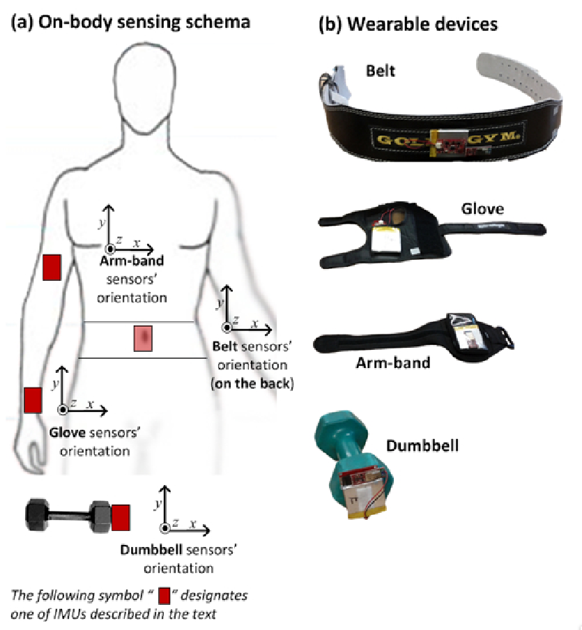
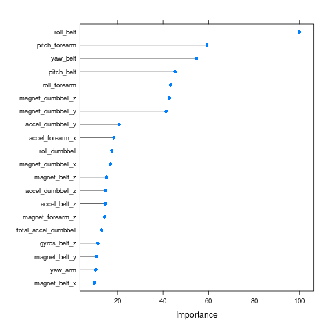

Validating Exercise Quality with Body Sensors
1. Introduction
Using devices such as Jawbone Up, Nike FuelBand, and Fitbit it is possible to collect a large amount of data about personal activity. These type of devices are part of the quantified self movement — a group of enthusiasts who regularly take measurements about themselves to improve their health, to find patterns in their behaviour, or simple because they are tech geeks. People regularly quantify how much of a particular activity they do, but they rarely quantify how well they do it. This project uses the data from accelerometers on the belt, forearm, arm, and dumbbell of six participants, shown in figure 1 (Velloso, Eduardo and Bulling, Andreas and Gellersen, Hans and Ugulino, Wallace and Fuks, Hugo, 2013).

Figure 1: Sensing setup.
Participants performed one set of ten repetitions of the Unilateral Dumbbell Biceps Curl correctly (Class A) and incorrectly in four ways:
- Throwing the elbows to the front (Class B)
- Lifting the dumbbell only halfway (Class C)
- Lowering the dumbbell only halfway (Class D)
- Throwing the hips to the front (Class E)
The video below demonstrates the correct method to perform unilateral biceps curls.
Brett Taylor, D B Unilateral Curls.
This report partially reproduces the research in Velloso et al. (2013), who developed a live feedback system to assist people performing curls perform them correctly. This paper predicts the type of biceps curl (A to E).
2. Data Preparation
The data is available from the UCI Machine Learning Repository. Each IMU has x, y, and z values + euler angles (roll, pitch and yaw). For each time window (1s of data), there are several statistics calculations, like Kurtosis, Variance, etc. The classe column contains the dependent variable.
2.1. Load Data
The data for this assignment is loaded directly from the course website.
# Download data library(readr) raw_data <- read_csv("https://d396qusza40orc.cloudfront.net/predmachlearn/pml-training.csv") validate_raw <- read_csv("https://d396qusza40orc.cloudfront.net/predmachlearn/pml-testing.csv")
The training data contains 160 variables and 19622 observations.
2.2. Pre-Processing
The pre-processing step involves removing variables that are less likely to contribute to the prediction. Near-zero variance variables have a low proportion of unique values over the sample size. The data also contains a large number of missing values because many of the variables contain periodic descriptive statistics of other variables. Independent variables with more than 95% of missing values are removed from the data set. This omission will not influence the error rate of the prediction model since these are summary statistics that highly correlate with the other data. The first seven variables are meta data that can also be removed.
This feature-reduction step leaves 53 variables. Thirteen measurements for each of the four locations (belt, arm, dumbell, forearm) and the independent variable. Acceleration, gyroscope, and magnet were measured in three orthogonal directions. Pitch, roll, yaw and total acceleration have one dimension (Table 1).
# Summarise predictors names_clean_data <- gsub("total_accel", "total-accel", names(clean_data)) vars <- strsplit(names_clean_data[-53], "_") measurements <- unlist(lapply(vars, function(x){x[1]})) locations <- unlist(lapply(vars, function(x){x[2]})) table(measurements, locations)
| arm | belt | dumbbell | forearm | |
|---|---|---|---|---|
| accel | 3 | 3 | 3 | 3 |
| gyros | 3 | 3 | 3 | 3 |
| magnet | 3 | 3 | 3 | 3 |
| pitch | 1 | 1 | 1 | 1 |
| roll | 1 | 1 | 1 | 1 |
| total-accel | 1 | 1 | 1 | 1 |
| yaw | 1 | 1 | 1 | 1 |
3. Training and Testing Data
The clean data is partitioned in a training set (70% of the data) and a testing set.
4. Modelling
A Random Forest model is fitted to the data with three-way cross-validation.
# Use three-fold cross-validation to select optimal tuning parameters fit_control <- trainControl(method = "cv", number = 3, verboseIter = FALSE) # fit model fit <- train(classe ~ ., data = training, method = "rf", trControl = fit_control, allowParallel = TRUE) fit$finalModel
Call:
randomForest(x = x, y = y, mtry = min(param$mtry, ncol(x)), allowParallel = TRUE)
Type of random forest: classification
Number of trees: 500
No. of variables tried at each split: 27
OOB estimate of error rate: 0.68%
Confusion matrix:
A B C D E class.error
A 3899 6 1 0 0 0.001792115
B 15 2639 3 1 0 0.007148232
C 0 17 2373 6 0 0.009599332
D 0 1 28 2220 3 0.014209591
E 0 1 5 7 2512 0.005148515
4.1. Testing the model
The model is applied to the testing data to determine the Out-of-Sample error.
# use model to predict classe in validation set (testing) predictions <- predict(fit, newdata = testing) # show confusion matrix to get estimate of out-of-sample error confusionMatrix(as.factor(testing$classe), predictions)
Confusion Matrix and Statistics
Reference
Prediction A B C D E
A 1670 2 1 0 1
B 3 1134 2 0 0
C 0 3 1020 3 0
D 0 1 6 957 0
E 0 0 5 3 1074
Overall Statistics
Accuracy : 0.9949
95% CI : (0.9927, 0.9966)
No Information Rate : 0.2843
P-Value [Acc > NIR] : < 2.2e-16
Kappa : 0.9936
Mcnemar's Test P-Value : NA
Statistics by Class:
Class: A Class: B Class: C Class: D Class: E
Sensitivity 0.9982 0.9947 0.9865 0.9938 0.9991
Specificity 0.9991 0.9989 0.9988 0.9986 0.9983
Pos Pred Value 0.9976 0.9956 0.9942 0.9927 0.9926
Neg Pred Value 0.9993 0.9987 0.9971 0.9988 0.9998
Prevalence 0.2843 0.1937 0.1757 0.1636 0.1827
Detection Rate 0.2838 0.1927 0.1733 0.1626 0.1825
Detection Prevalence 0.2845 0.1935 0.1743 0.1638 0.1839
Balanced Accuracy 0.9986 0.9968 0.9926 0.9962 0.9987
The out of sample accuracy is, with 95% confindence, between 0.993 and 0.997, less than 1 % error.
The random forest model has a built-in variable importance score that illustrates the influence each predictor has on the outcomes. The image in figure 2 visualises the top twenty variables. This analysis shows that the roll of the belt is the most influential variable.

Figure 2: Top-twenty variable sorted by importance.
5. Validating the prediction model
The prediction model fit is applied to the validation data set to test the accuracy of the prediction. The feedback of the quiz shows that all answers are correct.
| Case | Prediction |
|---|---|
| Case 1 | B |
| Case 2 | A |
| Case 3 | B |
| Case 4 | A |
| Case 5 | A |
| Case 6 | E |
| Case 7 | D |
| Case 8 | B |
| Case 9 | A |
| Case 10 | A |
| Case 11 | B |
| Case 12 | C |
| Case 13 | B |
| Case 14 | A |
| Case 15 | E |
| Case 16 | E |
| Case 17 | A |
| Case 18 | B |
| Case 19 | B |
| Case 20 | B |
6. References
Velloso, Bulling, Gellersen, Ugulino, Fuks (2013) Qualitative Activity Recognition of Weight Lifting Exercises, AH '13: Proceedings of the 4th Augmented Human International Conference, Pages 116–123. https://doi.org/10.1145/2459236.2459256